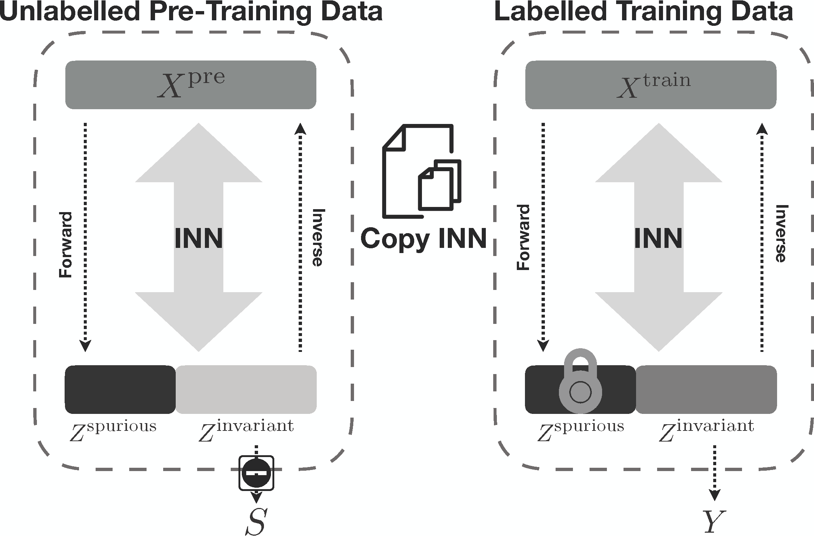

Transparency in Algorithmic Fairness
Novi Quadrianto
Reader in Machine Learning
Department of Informatics, University of Sussex
Machine learning systems
Machine learning systems are being implemented in all walks of life
| Picture credit: Kevin Hong |
Picture credit: AlgorithmWatch |
 Picture credit: Centre for Data Ethics and Innovation, UK |
| Social credit system, China | Personal budget calculation, UK | Financial services, Crime and justice, |
| Loan decision, Finland | Recruitment, | |
| etc. | Local government |
Algorithmic fairness definitions
Algorithmic fairness methods with transparency
Transparency in fairness
Experiments on CelebA dataset: $202,599$ celebrity face images with $40$ attributes, gender as the binary protected attribute, the attribute smiling as the classification task
| Acc. | TPR Diff. | TPR male | TPR female | |
| original image representation $\mathbf{x}\in\mathbb{R}^{2048}$ | 89.70 | 7.54 | 92.03 | 84.50 |
| fair image representation in the data domain $T_{\omega}(\mathbf{x})\in\mathbb{R}^{2048}$ | 91.31 | 4.76 | 91.85 | 87.09 |
| Non-spurious |  |
Spurious |  |
||
Fair and transferable
|  | Disentangling the latent space (c.f. on the reconstruction space) into two components:
|
Transparency in fairness
 Original data |
 Non-Spurious |
 Spurious |
• Gender as the protected attribute
• Unfortunately, the model lightens the skintone when gender-neutralising male faces
Results on the CelebA dataset
• We use gender and age as the two protected attributes.
• We use smiling as the classification task.
| method | Acc. | TPR Diff. | FPR Diff. |
| logistic regression (original) | 89.71 | 6.69 | 6.40 |
| logistic regression (original and GAN contrastive) | 88.94 | 3.50 | 2.79 |
| logistic regression (original and NN contrastive) | 88.78 | 3.32 | 3.53 |
| $\ddagger$logistic regression (original and GAN contrastive with output consistency) | 94.15 | 3.51 | 2.18 |
$\ddagger$: Rejection learning -- classifier only makes a prediction if there is an agreement between original and contrastive examples (occurs in $17,237$ out of $20,000$ test examples, i.e. $86.185\%$).